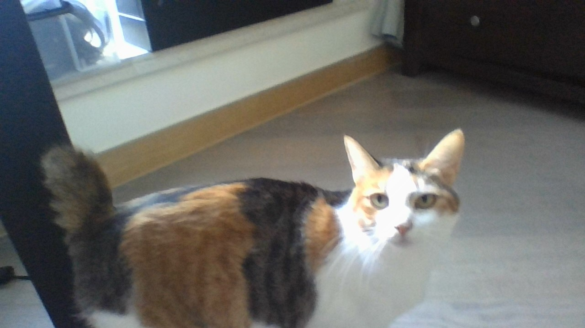

ur dog is not dog instead she is a cat. I think the piece reflects the play very well showing us what happened to the main character and the tragic back story he faces. It gives the viewer a deeper understanding of the character letting the viewer relate to them more.
